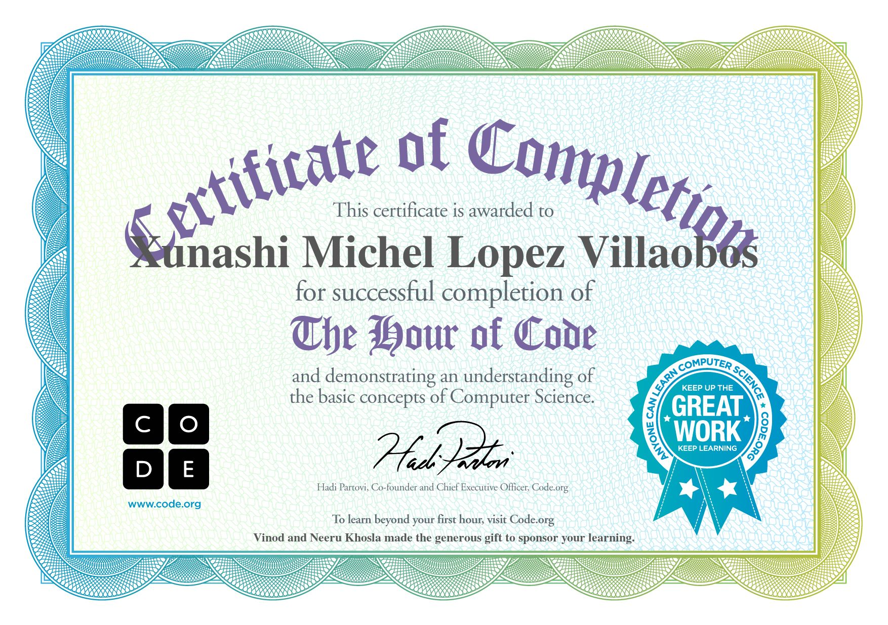

UV-PROJECT
Xunashi Michel Lopez Villalobos
Grupo: 102
Carrera: LSCA

Informacion General
Los sistemas numéricos de codificación son técnicas utilizadas para representar textos, flujos de datos o archivos mediante números enteros, utilizando los conceptos de la teoría de números. En la actualidad, tanto la teoría de números como los sistemas numéricos de codificación tienen gran auge en el mundo de la criptografía y en la seguridad computacional. En este capítulo estudiaremos el sistema decimal, el binario, el octal y hexadecimal, y las conversiones de un sistema a otro.
Imagenes

Videos de youtube
Display 3
El código binario es el sistema numérico usado para la representación de textos, o procesadores de instrucciones de computadora, utilizando el sistema binario (sistema numérico de dos dígitos, o bit: el "0" /cerrado/ y el "1" /abierto/). En informática y telecomunicaciones, el código binario se utiliza con variados métodos de codificación de datos, tales como cadenas de caracteres, o cadenas de bits. Estos métodos pueden ser de ancho fijo o ancho variable. Por ejemplo en el caso de un CD, las señales que reflejarán el "láser" que rebotará en el CD y será recepcionado por un sensor de distinta forma indicando así, si es un cero o un uno.
IMG

Videos de youtube
Informacion:
¿QUÉ ES EL ÁLGEBRA BOOLEANA? Es una rama especial del álgebra que se usa principalmente en electrónica digital. El álgebra booleana fue inventada en el año 1854 por el matemático inglés George Boole. El álgebra de Boole es un método para simplificar los circuitos lógicos (o a veces llamados circuitos de conmutación lógica) en electrónica digital. Por lo tanto, también se llama como "Cambio de álgebra". Podemos representar el funcionamiento de los circuitos lógicos utilizando números, siguiendo algunas reglas, que son bien conocidas como "Leyes del álgebra de Boole". Compuertas lógicas También podemos hacer los cálculos y las operaciones lógicas de los circuitos aún más rápido siguiendo algunos teoremas, que se conocen como "Teoremas del álgebra de Boole". Una función booleana es una función que representa la relación entre la entrada y la salida de un circuito lógico. La lógica booleana solo permite dos estados del circuito, como True y False. Estos dos estados están representados por 1 y 0, donde 1 representa el estado "Verdadero" y 0 representa el estado "Falso". Lo más importante para recordar en el álgebra de Boole es que es muy diferente al álgebra matemática regular y sus métodos. Antes de aprender sobre el álgebra de Boole, vamos a contar un poco sobre la historia del álgebra de Boole y su invención y desarrollo.
Imagenes

Vides de youtube
Informacion:
La rapidez del desarrollo tecnológico ha dado lugar a que se puedan integrar simultáneamente en un mismo dispositivo un número determinado de puertas entre sí, que realizan una función concreta, así a principio de los años sesenta llegó la aparición del circuito integrado. A partir de entonces se han ido mejorando las técnicas de fabricación de forma espectacular, hasta llegar a la actualidad, donde es posible encontrar en una superficie de algo más de 1 cm cuadrado cientos de miles de puertas lógicas. Dependiendo del número de elementos puertas que se encuentren integrados en el chip se dice que ese circuito está dentro de una determinada escala de integración.
IMG

Videos de youtube
Informacion:
Un decodificador o descodificador es un circuito combinacional, cuya función es inversa a la del codificador, es decir, convierte un código binario de entrada (natural, BCD, etc.) de N bits de entrada y M líneas de salida (N puede ser cualquier entero y M es un entero menor o igual a 2N), tales que cada línea de salida será activada para una sola de las combinaciones posibles de entrada. Normalmente, estos circuitos suelen encontrarse como decodificador / demultiplexor. Esto es debido a que un demultiplexor puede comportarse como un decodificador. Si por ejemplo se tiene un decodificador de 2 entradas con 22=4 salidas, su funcionamiento sería el que se indica en la siguiente tabla, donde se ha considerado que las salidas se activen con un "uno" lógico
IMG:
/UNID2_37.gif)
Videos de youtube
Informacion:
Los multiplexores son circuitos combinacionales con varias entradas y una única salida de datos. Están dotados de entradas de control capaces de seleccionar una, y solo una, de las entradas de datos para permitir su transmisión desde la entrada seleccionada hacia dicha salida. En el campo de la electrónica el multiplexor se utiliza como dispositivo que puede recibir varias entradas y transmitirlas por un medio de transmisión compartido. Para ello lo que hace es dividir el medio de transmisión en múltiples canales, para que varios nodos puedan comunicarse al mismo tiempo. Una señal que está multiplexada debe demultiplexarse en el otro extremo.
IMG:

Videos de youtube
Informacion:
Un contador es una variable cuyo valor se incrementa o decrementa en una cantidad constante, cada vez que se produce un determinado suceso, acción o iteración. Los contadores se utilizan con la finalidad de contar sucesos, acciones o iteraciones internas en un bucle, proceso, subrutina o donde se requiera cuantificar; deben ser inicializados antes del ciclo o proceso, e incrementados o decrementados dentro del ciclo. La inicialización consiste en asignarle al contador un valor inicial, es decir el número desde el cual necesitamos se inicie el conteo.
IMG:

Videos de youtube
Informacion:
Es una variable que está en ambos miembros de una asignación interna a la que se le suma un valor variable.Es una variable que como su nombre lo indica, suma sobre sí misma un conjunto de valores, al finalizar con el ciclo contendrá, en una sola variable, la sumatoria de todos los valores, que cumplen una determinada condición. Es necesario haber inicializado en un momento previo a esta variable, ya que va a ser leído su contenido. El sumador acumulara en operaiones sencillas o complejas segun lo desees, dentro del algoritmo.IMG:

Videos de youtube
Informacion:
En computación, la unidad aritmética lógica o unidad aritmético-lógica, también conocida como ALU (siglas en inglés de arithmetic logic unit), es un circuito digital que calcula operaciones aritméticas (como suma, resta, multiplicación, etc.) y operaciones lógicas (si, y, o, no), entre valores (generalmente uno o dos) de los argumentos. Por mucho, los circuitos electrónicos más complejos son los que están construidos dentro de los chips de microprocesadores modernos. Por lo tanto, estos procesadores tienen dentro de ellos un ALU muy complejo y potente. De hecho, un microprocesador moderno (y los mainframes) puede tener múltiples núcleos, cada núcleo con múltiples unidades de ejecución, cada una de ellas con múltiples ALU. Muchos otros circuitos pueden contener en el interior una unidad aritmético lógica: unidades de procesamiento gráfico como las que están en las GPU modernas, FPU como el viejo coprocesador matemático 80387, y procesadores digitales de señales como los que se encuentran en tarjetas de sonido, lectoras de CD y los televisores de alta definición. Todos éstos tienen en su interior varias ALU potentes y complejas.IMG:

Videos de youtube
primer video: pelea apple microsoft :una de las grandes peleas originada por la tecnologia, queriendo
liderar en los estados unidos. nos demuestra que grandes potencias tambien tiene errores y aqui lo unico
que importaba era tener
un buen conocimiento y las ganas de crecer. ya que microsoft empezo desdecero con la habilidad del
conocimieno y saber como manejar su astucia y apostar todo por sus sueños.
en la conferencia se hablo sobre la in fluencia que tiene las marcas; google , amazon apple y facebook ,
en nuestra vida en lo que consiste basicamente cada marca o aplicacion no obstante se menciona qu google
y amazon pueden
otorgar prestamos teles como si fuesen bancos lo que pueden significar que si otorgan prestamos los
bancos pueden desaparecer. Tambien se menciono sobre la evolucion de las utilizacion de las redes
sociales y la comunicacion, todo
en exceso es malo pero gracias a la evolucion de las tecnologias que estan en nuestra mano podemos hacer
ciertas cosas mas rapido incluso en nuestros trabajos o negocios.
pelicula, codigo enigma, nos enseña que los conocimientos no son como tratar a la gente o tener un cuerpo
o rostro perfecto, no es necesario un cuerpo guapo o feo, ya que eso no define tu inteligencia. sigue tus
sueños sin importar
lo que otros digan o por muy al que te traten. si tu sabes que eso puede funcionar no declines, si al
principio no era como esperabas vuelvelo hacer y veras que tendras otros conocimiento de como no tienes
que hacerlo porque tus
fracasos son aprendizajes.